THEATRE PLAYS
| Abigail's Party<
Year: 2006 Language: EN Format: mp4 Resolution: 480p |
| 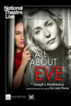 | All About Eve<
Year: 2019 Language: EN Format: mp4 Resolution: 1080p |
| Angels in America: Part I - Millennium Approaches<
Year: 2017 Language: EN Format: mp4 Resolution: 1080p |
| 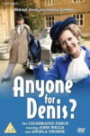 | Anyone for Denis?<
Year: 1982 Language: EN Format: mp4 Resolution: 720p |
| Arsenic & Old Lace<
Year: 1962 Language: EN Format: mp4 Resolution: SD |
| 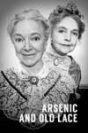 | Arsenic and Old Lace<
Year: 1969 Language: EN Format: mp4 Resolution: SD |
| A Beautiful Thing<
Year: 2013 Language: EN Format: mp4 Resolution: 720p |
| 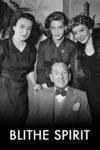 | Blithe Spirit<
Year: 1956 Language: EN Format: mp4 Resolution: SD |
| 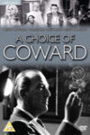 | Blithe Spirit<
Year: 1966 Language: EN Format: mp4 Resolution: SD |
| 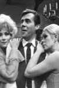 | Blithe Spirit<
Year: 1966 Language: EN Format: mp4 Resolution: SD |
| La cage aux folles<
Year: 2011 Language: EN Format: mp4 Resolution: 480p |
| La Cage aux folles<
Year: 1973 Language: EN Format: mp4 Resolution: SD |
| 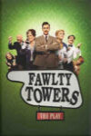 | Fawlty Towers: The Play<
Year: 2025 Language: EN Format: mp4 Resolution: 1080p |
| 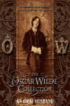 | An Ideal Husband<
Year: 1969 Language: EN Format: mp4 Resolution: 576p |
| 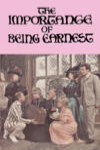 | The Importance of Being Earnest<
Year: 1964 Language: EN Format: mp4 Resolution: 480p |
| The Importance of Being Earnest<
Year: 1974 Language: EN Format: mp4 Resolution: 720p |
| 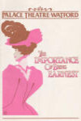 | The Importance of Being Earnest<
Year: 1981 Language: EN Format: mp4 Resolution: SD |
| 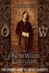 | The Importance of Being Earnest<
Year: 1988 Language: EN Format: mp4 Resolution: 720p |
| The Importance of Being Earnest<
Year: 2011 Language: EN Format: mp4 Resolution: 1080p |
| 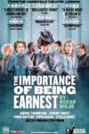 | The Importance of Being Earnest<
Year: 2018 Language: EN Format: mp4 Resolution: SD |
| The Importance of Being Earnest on Stage<
Year: 2015 Language: EN Format: mp4 Resolution: 1080p |
| 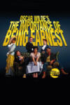 | The Importance of Being Earnest on Stage<
Year: 2015 Language: EN Format: mp4 Resolution: 1080p |
| 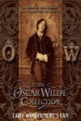 | Lady Windermere's Fan<
Year: 1985 Language: EN Format: mp4 Resolution: 576p |
| 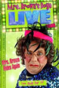 | Mrs. Brown Rides Again<
Year: 2013 Language: EN Format: mp4 Resolution: SD |
| 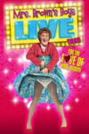 | Mrs. Brown's Boys Live Tour: For the Love of Mrs. Brown<
Year: 2014 Language: EN Format: mp4 Resolution: 576p |
| 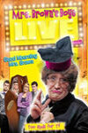 | Mrs. Brown's Boys Live Tour: Good Mourning Mrs. Brown<
Year: 2012 Language: EN Format: mp4 Resolution: SD |
| 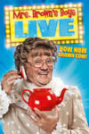 | Mrs. Brown's Boys Live Tour: How Now Mrs. Brown Cow<
Year: 2015 Language: EN Format: mp4 Resolution: 576p |

| National Theatre Live Theatre of Blood<
Year: 2005 Language: EN Format: mp4 Resolution: 480p |
| National Theatre Live: Allelujah!<
Year: 2018 Language: EN Format: mp4 Resolution: 720p |
| National Theatre Live: Amadeus<
Year: 2017 Language: EN Format: mp4 Resolution: 1080p |
| National Theatre Live: Angels in America Part Two: Perestroika<
Year: 2017 Language: EN Format: mp4 Resolution: 720p |
| National Theatre Live: East is East<
Year: 2021 Language: EN Format: mp4 Resolution: 1080p |
| 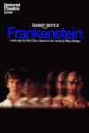 | National Theatre Live: Frankenstein<
Year: 2011 Language: EN Format: mp4 Resolution: 1080p |
| 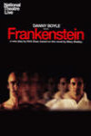 | National Theatre Live: Frankenstein<
Year: 2011 Language: EN Format: mp4 Resolution: 1080p |
| National Theatre Live: Jack Absolute Flies Again<
Year: 2022 Language: EN Format: mp4 Resolution: 1080p |

| National Theatre Live: London Assurance<
Year: 2010 Language: EN Format: mp4 Resolution: 1080p |
| National Theatre Live: London Assurance<
Year: 2010 Language: EN Format: mp4 Resolution: 1080p |
| National Theatre Live: Nye<
Year: 2024 Language: EN Format: mp4 Resolution: 1080p |
| National Theatre Live: The Audience<
Year: 2013 Language: EN Format: mp4 Resolution: 1080p |

| National Theatre Live: The Habit of Art<
Year: 2010 Language: EN Format: mp4 Resolution: 1080p |
| 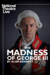 | National Theatre Live: The Madness of George III<
Year: 2018 Language: EN Format: mp4 Resolution: 1080p |
| National Theatre Live: Under Milk Wood<
Year: 2021 Language: EN Format: mp4 Resolution: 1080p |

| National Theatre: The Corn Is Green<
Year: 2022 Language: EN Format: mp4 Resolution: 1080p |
| Piaf<
Year: 1984 Language: EN Format: mp4 Resolution: 576p |
| The Picture of Dorian Gray<
Year: 1976 Language: EN Format: mp4 Resolution: 576p |

| Puppetry of the Penis Live at the Forum<
Year: 2001 Language: EN Format: mp4 Resolution: 576p |
| 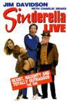 | Sinderella Live<
Year: 1995 Language: EN Format: mp4 Resolution: 480p |
| What the Butler Saw<
Year: 1987 Language: EN Format: mp4 Resolution: 480p |
| 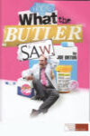 | What The Butler Saw<
Year: 2020 Language: EN Format: mp4 Resolution: 720p |